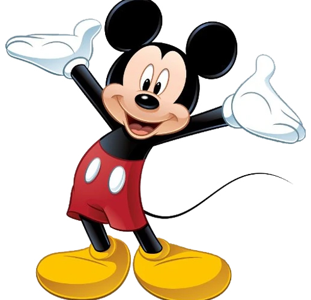
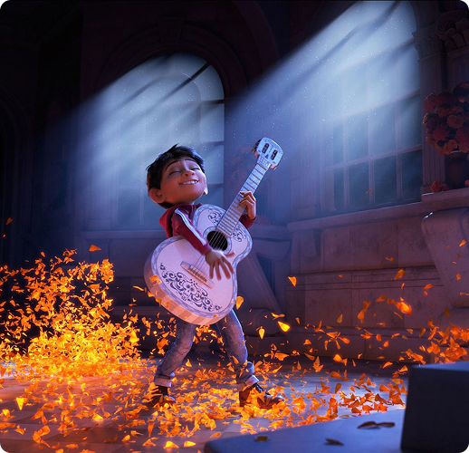
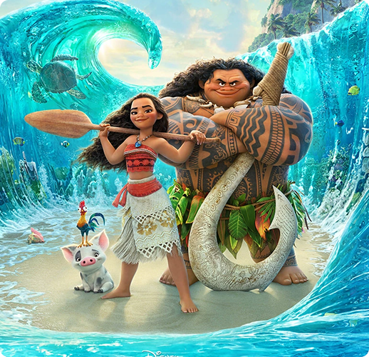

1 Пригоди миші
“Міккі Маус”
Міккі любить пригоди, але характер його спокійний і добрий. Сьогодні ми впізнаємо Міккі Мауса в його культових червоних шортах, жовтих туфлях і білих рукавичках. Він оптимістичний, сміливий і милий (The Walt Disney Family Museum).

2 Історія іншого світу
“Коко”
Музикант-початківець Мігель, зіткнувшись із забороною предків на музику, потрапляє в Країну Мертвих, щоб знайти свого прапрадіда, легендарного співака (опис IMDb).

3 Єдність землі та моря
“Ваяна”
У Стародавній Полінезії, коли жахливе прокляття, накладене на себе напівбогом Мауї, досягає острова Ваяни, вона відповідає на заклик Океану шукати напівбога, щоб налагодити ситуацію (опис IMDb).